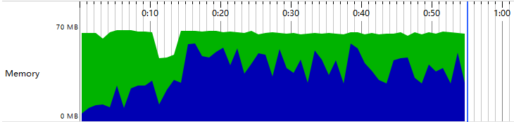
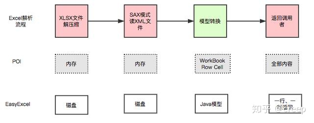
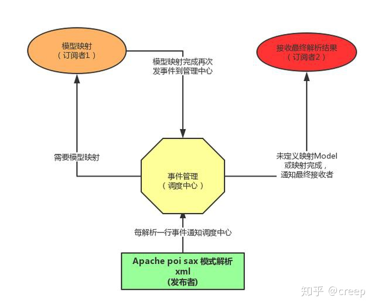
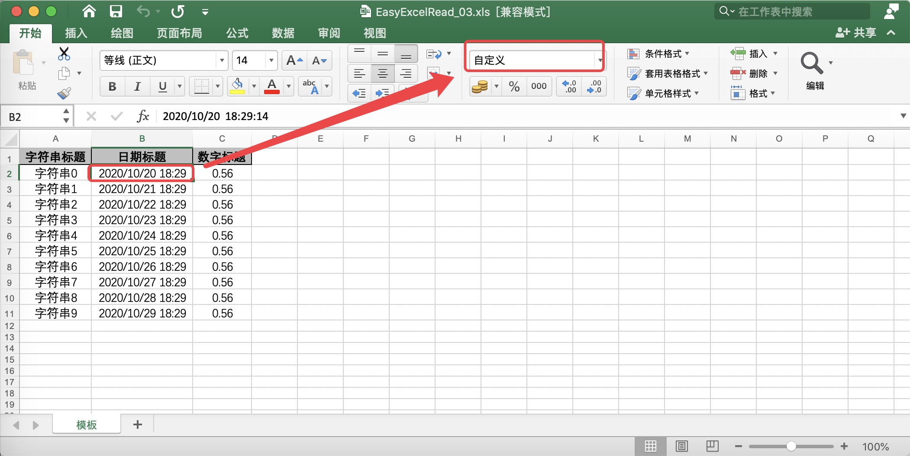
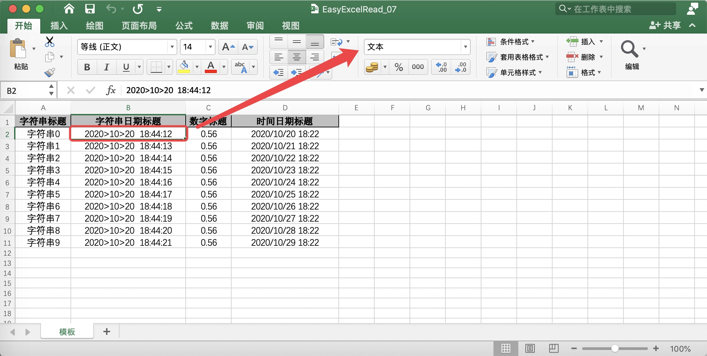
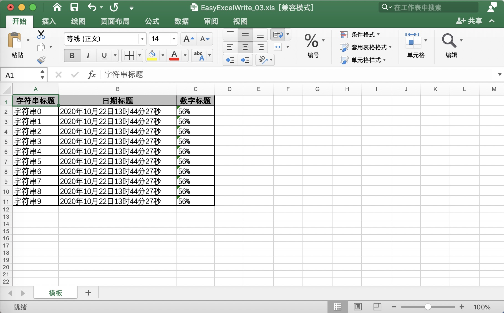

简介
Java 领域解析、生成 Excel 比较有名的框架有 Apache poi、jxl 等。但他们都存在一个严重的问题就是非常的耗内存。如果你的系统并发量不大的话可能还行，但是一旦并发上来后一定会 OOM 或者 JVM 频繁的 full gc。EasyExcel 是阿里巴巴开源的一个 excel 处理框架，以使用简单、节省内存著称。EasyExcel 是一个基于 Java 的简单、省内存的读写 Excel 的开源项目。在尽可能节约内存的情况下支持读写百 M 的 Excel。
64M 内存1分钟内读取 75M（46W行25列）的 Excel（当然还有急速模式能更快，但是内存占用会在 100M 多一点）

EasyExcel 能大大减少占用内存的主要原因是在解析 Excel 时没有将文件数据一次性全部加载到内存中，而是从磁盘上一行行读取数据，逐个解析。
下图是 EasyExcel 和 POI 在解析 Excel 时的对比图。

EasyExcel 采用一行一行的解析模式，并将一行的解析结果以观察者的模式通知处理（AnalysisEventListener）。

上面简要介绍了 EasyExcel 的特点和原理，关于 EasyExcel 的其他问题可以先参考：
Github 地址：https://github.com/alibaba/easyexcel
官方文档：https://www.yuque.com/easyexcel/doc/easyexcel
下面就通过代码来介绍下怎么使用 EasyExcel。
Maven 依赖
1 | <!-- https://mvnrepository.com/artifact/com.alibaba/easyexcel --> |
读 Excel
数据量小的情况
Excel 数据
EasyExcelRead_03.xls 中 日期标题 为自定义日期格式。

EasyExcelRead_03.xls 中 日期标题 为文本格式。

实体类
1 |
|
自定义转换器
1 | /** |
测试类
1 | /** |
显示结果
1 | ConverterDto(string=自定义：字符串0, date=2020年10月20日18时29分14秒, doubleData=0.56) |
数据量大的情况
Excel 数据
EasyExcelRead_03.xls 中 日期标题 为自定义日期格式。
实体类
1 |
|
监听类
1 | /** |
持久层
1 | /** |
测试类
1 | /** |
显示结果
1 | 13:38:43.040 [main] INFO com.vincent.common.exceltest.easyexcel.DemoDataListener - 解析到一条数据:{"date":1603189754000,"doubleData":"56%","string":"字符串0"} |
写 Excel
实体类
1 |
|
测试类
1 | /** |
导出后的 Excel 数据
导出的数据都是一样，区别在于一个03版的 Excel、一个07版的 Excel。

web 上传、下载
测试类
1 | /** |
If you like this blog or find it useful for you, you are welcome to comment on it. You are also welcome to share this blog, so that more people can participate in it. If the images used in the blog infringe your copyright, please contact the author to delete them. Thank you !